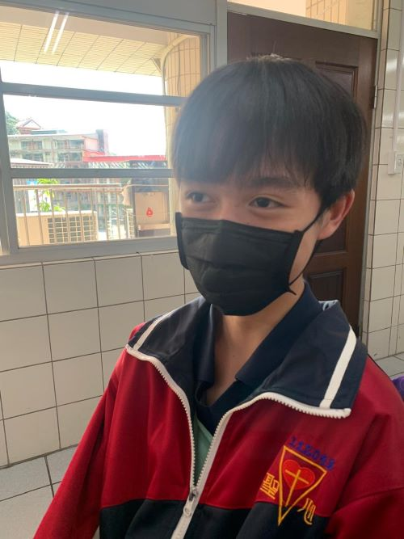
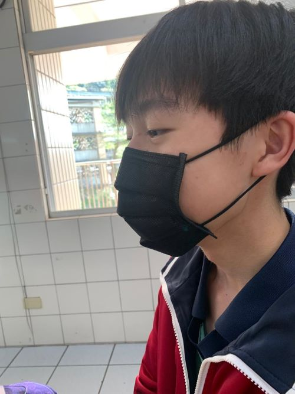

|
Untuk Mandarin kami diminta untuk membuat sebuah laporan tentang Buddy saya yang berada di Taiwan.
|
|


|
Ini adalah pertanyaannya |
|
- 你的新朋友叫什么名字？
Siapakah nama teman barumu?
- 他今年多大了？
Berapa usianya tahun ini?
- 他的生日是几月几日？
Kapan ulang tahunnya?
- 他在哪个学校读书？
Dimanakah dia bersekolah?
- 他今年上几年级？
Tahun ini dia tingkat berapa?
- 他喜欢吃什么？
Apa makanan kegemarannya?
- 他的爱好是什么？
Apa hobinya?
- 你们去了那些地方？
Tempat mana saja yang telah kalian kunjungi?
- 你最喜欢哪一个活动？
Permainan apa yang kamu sukai?
- 在那边你们看到了什么？做了什么？学了什么？
Apa saja yang kamu lihat disana? Apa saja yang kamu lakukan? Apa saja yang kamu pelajari?
|
|
- 他的名字是Max。
Namanya adalah Max.
- 他今年十四多大。
Umurnya saat ini adalah 14 tahun.
- 他的生日是四月二十日。
Dia berulang tahun di 20 April.
- 他的Sacred heart学校读书。
Dia bersekolah di Sekolah Sacred Heart.
- 他今年上八年级。
Dia sekarang berada di Kelas 8.
- 他喜欢吃米饭。
Dia suka makan nasi.
- 他的爱好是看书。
Hobinya adalah membaca buku.
- 我去十分大瀑布。
Saya mengunjungi Shifen Waterfall.
- 他最喜欢玩电脑。
Kesukaannya adalah bermain komputer.
- 我在那边看到了很多人。我做吃。我学了关于怎么和别人保持联系。
Saya telah bertemu dengan banyak orang. Saya banyak makan. Saya belajar betapa pentingnya untuk selalu menjalin hubungan dengan orang lain.
|
|
|